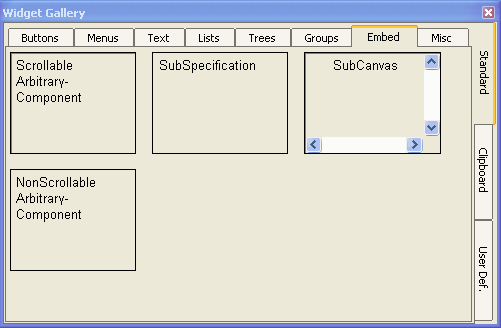
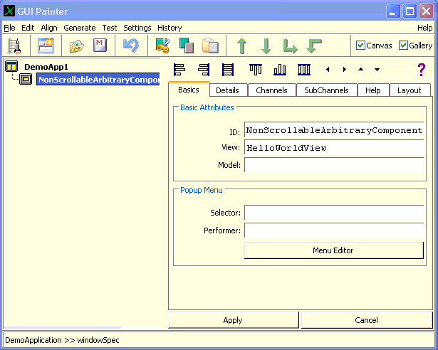
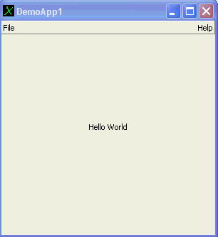
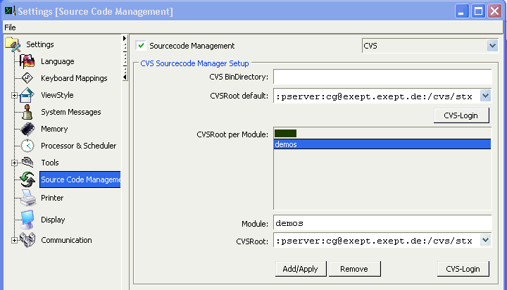
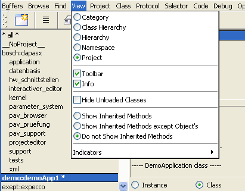
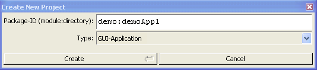

![[prev]](../../icons/DocsLeftArrow.gif)
![[up]](../../icons/DocsUpArrow.gif)
![[next]](../../icons/DocsRightArrow.gif)
Deploying an Application
Contents
This document gives you some information and examples on how to
build a stand-alone application for deployment.
A project is now described by a project-definition, which is implemented as
a class with protocol to return the specification. We use a class instead of
xml-files or other objects, in order to make it easy to compile, deliver and maintain
project definitions much like any other compilable item in the stx environment.
Especially, to be able to use the browser, cvs and the stc-compiler to embed these definitions
into a compilation unit (such as a dll or an exe).
Project definitions can be created manually (by entering a corresponding class definition
and accepting), via the browser's "New-project" menu function, or programmatically.
The ProjectDescription class, which is the superclass of all those specifications,
knows how to generate the files which are required to build the target.
Such files include makefiles, resource-specifications etc.
A library definition specifies a dll-target (or .so-file, in the unix world).
This consists of a number of classes, optional extension-methods for other classes,
preRequisite libraries and optionally load/and unload actions.
Much like a library, an application definition also may include classes and extensions,
but also includes product information (vendor, release, copyrights),
resource information (icons and documentation files),
specifications for startup (startup class and selector) and finally,
specifications to generate self-installable packages for delivery (NullSoft installer files).
Lets start with a very simple application: a simple GUI application, which shows
"hello world" in its window.
The code presented below looks a bit more complicated as required:
although this example could have been programmed easier using a Label-widget,
we use a private GUI widget component.
This was done in order to show how additional components (View-classes) can be added to an application.
First, we create (and debug) the application within the Smalltalk/X IDE:
Defining the Sample GUI Application
The initial applications code is generated automatically via the browser's "New"-"Application"
menu function:

which eventually (after a few accept actions) gives us a skeletton application.
We remove all but the "openAboutThisApplication" method from the instance protocol,
and also remove most of the menu items (using the Menu-Editor, by double-clicking on the menuSpec method in the
class protocol) to make the menu look like:

Using the UIPainter (double-click on the windowSpec-method in the class protocol),
add a Nonscrollable-Arbitrary component to the UI, by dragging it from the gallery:

into the canvas, and change its view-class to HelloWorldView (which we will define in just a minute):

The HelloWorldView is defined as simple subclass of View:
View subclass:#DemoView
instanceVariableNames:''
classVariableNames:''
poolDictionaries:''
category:'demos-StandAlone'
|
and has a single redraw method on the instance side:
redraw
|x y msg|
msg := 'Hello World'.
x := (self width - (font widthOf:msg)) // 2.
y := (self height - (font heightOf:msg)) // 2.
self displayString:msg at:(x @ y)
|
now, by double-clicking on the application (or the launch-icon in the UI-Painter),
the following application window should appear:

Setting up the Source Code Repository
Currently, the build and deployment process depends on a CVS repository to be available for checkin
of smalltalk code. If not already done, you should now create a CVS-repository and configure Smalltalk/X
to use it (at least for classes in the "demo"-module).
Here, the following setup was used:

The build procedure as shown below depends on a cvs-repository to be present.
Future releases of Smalltalk/X will allow for a deployment-build without a cvs repository,
and also to allow for other repository types (i.e. non-CVS) to be used
(especially, SubVersion and relational-DB-based storage will be supported).
Once this is implemented, the build process will look similar to the one described below.
Defining the demo-Project
Next, we have to define the package where our classes are to be stored.
Packages are organized in a hierarchical fashion.
For traditional reasons (and due to the cvs-history), the top hierarchy level
is called the "module", and the remaining levels are called the "package-directory".
Module and directory are also visible in a package-identifier,
which MUST be of the form module:directory,
where module is a single word, and directory has the form of a unix path (i.e. components separated by slashes).
We recommend using different modules for the different applications -
here, we use "demo" as module and "demoApp1" as directory.
In the browser, move the classes to the "demo:demoApp1" project,
and then switch the browser's display-mode to "project":

and, using the projectViews "New..." menu, create a project-definition there:

(don't forget to check for the type to be "GUI-Application" and the
projects name to be "demo:demoApp1" before pressing "OK".
Although the browser tries hard to "do-what-you-mean", but sometimes
its initial values are stupid...)
After that, you should see the new-generated project definition named "demo_demoApp1"
(i.e. thats a class with the name of the package, with colons and slashes replaced by
underlines in the name).
This project definition class can be handled like any other class; especially, it
can be checked-in and out of the repository and it can be compiled to a binary object
using the "stc" compiler.
Some more Project-Definitions
Before we are able to generate the helper files required for dll- and exe-compilation,
we need to have a more detailed look at the project definition. Especially, we
have to tell it, which other packages (classLibraries) are to be packaged with the app,
and also check for the correct definition of the start-up code.
First change the two methods which specify the startup:
startupClassName
^ 'DemoApplication'
|
and:
startupSelector
^ #'open'
|
Second, some definitions which will identify the generated binary files
(especially, under windows, this information is displayed in the windows-explorer,
when you click one of the dll or exe files):
companyName
^ 'the wonder Company'
|
Finally, check the definition of the other required
packages; the automatically generated code is almost always wrong.
Edit the preRequisites method as appropriate:
preRequisites
^ #(
'stx:libview'
'stx:libwidg'
'stx:libview2'
'stx:libui'
'stx:libwidg2'
'stx:libcomp'
'stx:libbasic'
)
|
Saving the Project in the Repository
Now, we are ready to check the classes and generated build support files into the repository.
In the browser's project view, select the "Repository"-"Check In" menu function.
This will save all of the project classes and also generate build support files,
which are also checked into the repository.
The support files are:
| File | Description | Architecture |
| Make.spec | List of (class-)object files which are compiled | Shared among all architectures |
| Make.proto | Makefile template; included by unix-Makefile
uses Make.spec | unix |
| nt.mak | win32 makefile
uses Make.spec | win32 |
| bc.def | win32 dll-export definitions | win32 |
| <lib>.rc | win32 resource definitions
Contains vendor, version and copyright information | win32 |
| libInit.cc | initialization vector for lib
One entry per class in the dll | Shared among all architectures |
| modules.c | initialization vector for exe
One entry per class in the exe | Shared among all architectures |
| modules.stx | required dll definition
One entry per preRequisite classLib in the exe | Shared among all architectures |
| <app>.nsi | NullSoft installer definitions
used to generate self-install executable | win32 |
To see the generated file(s) without actually checking them into the repository,
select the browser's "Build" - "Show Generated" - "<file>" item from the project list menu.
Checking out and building from the Repository
Building under Windows
For now, the build must be done in a directory which is beside the installed stx directory.
Therefore, we open a command window, and execute the following commands there (user input in bold):
C:\...\work\stx>cd ..
C:\...\work>dir
17.08.2006 16:50 <DIR> .
17.08.2006 16:50 <DIR> ..
...
17.08.2006 16:51 <DIR> cg
17.08.2006 16:52 <DIR> exept
13.09.2006 16:28 <DIR> stx
...
C:\...\work>cvs -d :pserver:cg@exept.exept.de:/cvs/stx co demo
cvs checkout: Updating demo
cvs checkout: Updating demo/demoApp1
U demo/demoApp1/.cvsignore
U demo/demoApp1/DemoApplication.st
U demo/demoApp1/HelloWorldView.st
U demo/demoApp1/Make.spec
U demo/demoApp1/abbrev.stc
U demo/demoApp1/bc.def
U demo/demoApp1/bmake.bat
U demo/demoApp1/demoApp1.nsi
U demo/demoApp1/demoApp1WinRC.rc
U demo/demoApp1/demo_demoApp1.st
U demo/demoApp1/modules.c
U demo/demoApp1/modules.stx
U demo/demoApp1/nt.mak
C:\...\work>cd demo\demoApp1
C:\...\work\demo\demoApp1>bmake
...
|
"bmake" is a batch command to invoke make under the windows system.
For unix, use "make" instead, as in:
.../work/demo/demoApp1> make
|
Notice, that the above make commands generate a self-installing executable (under windows)
or a zip-file (under unix) for deployment.
If you only want to compile the application without generating
a deployable, make the "exe" target. (i.e. type "make exe" or "bmake exe").
You can also start a build from the browser, via the
select the browser's "Build"-"Binaries" item from the project list menu.
Rebuilding after a change
If you keep the build directory around (i.e. you do not remove it after the build),
a rebuild after a change is simply done by checking in the application in the browser,
and re-checking out (in the command window) afterwards:
C:\...\work\demo\demoApp1>cvs upd
cvs update: Updating .
P Make.spec
U abbrev.stc
P demoApp1.nsi
P demoApp1WinRC.rc
P demo_demoApp1.st
P modules.c
P modules.stx
P nt.mak
P DemoApplication.st
C:\...\work\demo\demoApp1>bmake
...
|
Most of the above is the same when building a non-GUI application
(i.e. a server or other application which does not open a window).
As above, first create a "demo:demoApp2" project in the browser's project-list menu.
Make sure, to choose "NonGUI-Application" from the combo list:

and create a simple HelloWorld class, with a single #start method:
Object subclass:#HelloWorld
instanceVariableNames:''
classVariableNames:''
poolDictionaries:''
category:'Demos'
|
the start-method must be in the class protocol (NOT on the instance side):
start
Stdout nextPutAll: 'Hello World'
|
in the project definition class "demo:demoApp2", change startupClassName and startUpSelector as:
startupClassName
^ #'HelloWorld'
|
and
startupSelector
^ #'start'
|
and check the project into then repository.
Going back to the command window, check the new project out of the repository:
C:\Dokumente und Einstellungen\cg\work\demo\demoApp1>cd ..
C:\Dokumente und Einstellungen\cg\work\demo>dir
...
20.09.2006 18:18 <DIR> demoApp1
...
C:\Dokumente und Einstellungen\cg\work\demo>cvs upd -d demoApp2
cvs update: Updating demoApp2
U demoApp2/.cvsignore
U demoApp2/HelloWorld.st
U demoApp2/Make.spec
U demoApp2/abbrev.stc
U demoApp2/bc.def
U demoApp2/bmake.bat
U demoApp2/demoApp2.nsi
U demoApp2/demoApp2WinRC.rc
U demoApp2/demo_demoApp2.st
U demoApp2/modules.c
U demoApp2/modules.stx
U demoApp2/nt.mak
C:\Dokumente und Einstellungen\cg\work\demo>dir
...
20.09.2006 18:18 <DIR> demoApp1
20.09.2006 18:34 <DIR> demoApp2
...
C:\...\work\demo>cd demoApp2
C:\...\work\demo\demoApp2>bmake
...
|
Finally, execute the program with:
C:\Dokumente und Einstellungen\cg\work\demo\demoApp2>demoApp2
Hello World
C:\Dokumente und Einstellungen\cg\work\demo\demoApp2>
|
Notice, that non-GUI applications are always console applications;
they can read their standard-input and write to the standard-output and -error.
In case of an error, a MiniDebugger is entered, which allows for some
limited command-oriented debugging.
For GUI applications, we do NOT recommend deployment without the tool classes.
Having a debugger around - even in a deployed end-user application - is of so
much value, that you don't want to miss it, once you and your customers
got used to simply pressing "Abort" in case of an error,
instead of having to restart the application from the beginning !
 Copyright © 2006 eXept Software AG
Copyright © 2006 eXept Software AG
Doc $Revision: 1.8 $ $Date: 2016-07-11 09:24:05 $